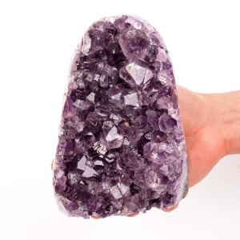
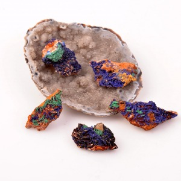
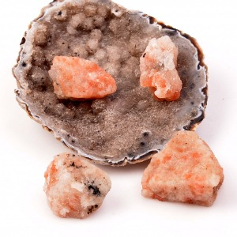
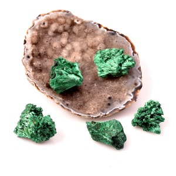
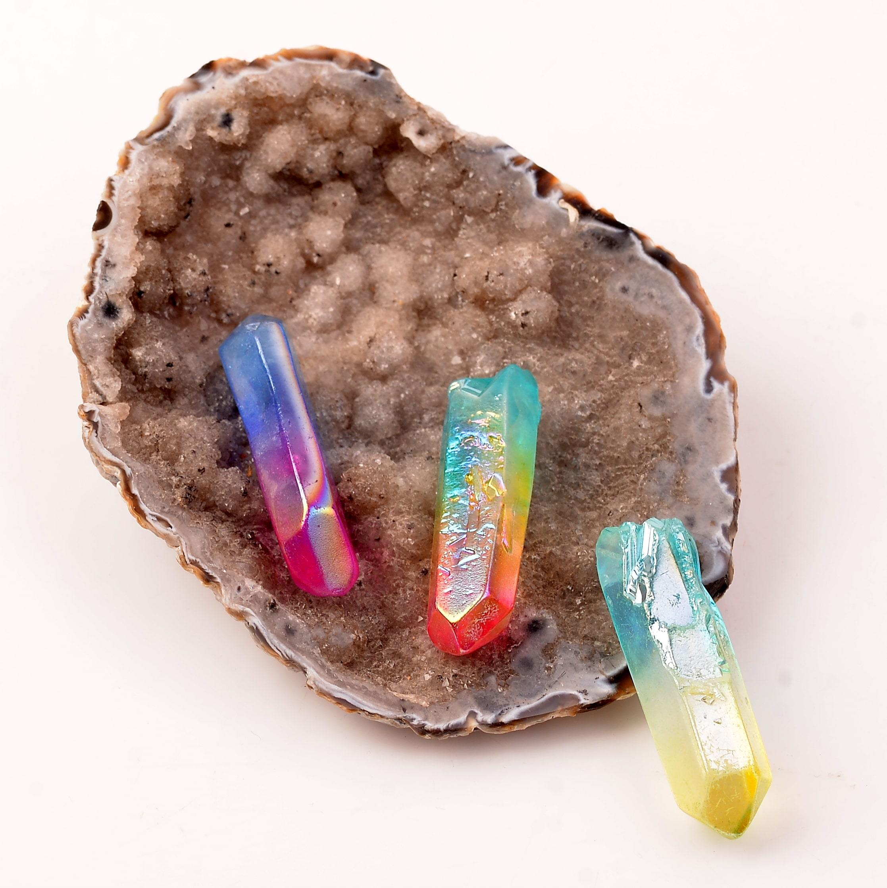

Ametist, kuvars ailesine ait bir taş olup genellikle mor renkte görülür. Ruhunuzu dengeleyen ve huzur veren bir taş olarak bilinir. Stresi azaltma, iç huzur sağlama ve ruhsal dengeyi destekleme konularında yardımcı olabilir.
Azurit, bakır içeren bir taştır ve genellikle mavi renkte görünür. Zihinsel netlik ve içgörüyü artırma özellikleriyle tanınır. Düşünceleri netleştirme, içsel keşiflere yol açma ve ruhsal derinliği keşfetme konularında kullanılır.
Güneş taşı, feldispat grubuna ait bir taş olup genellikle altın veya turuncu parıltılar içerir. Canlılık, iyimserlik ve pozitif enerji verme konularında etkilidir. Enerjiyi artırma, güneş enerjisini yansıtma ve ruhsal canlılık sağlama amacıyla kullanılır.
Malahit, bakır oksit içeren bir taş olup yeşil tonlarda görülür. Duygusal denge sağlama, negatif enerjileri absorbe etme ve kalp çakrasını açma gibi özelliklere sahiptir. Şifa çalışmalarında ve içsel dönüşüm süreçlerinde kullanılır.
Aura-Kuvars, kuvars kristali üzerine metal oksitlerin buharlaştırılmasıyla oluşturulan bir kaplama ile elde edilir. Çeşitli renklerde ve parlaklıkta görünür. Ruhsal berraklık, enerji dengeleme ve negatif enerjilerden arınma amacıyla kullanılır.
